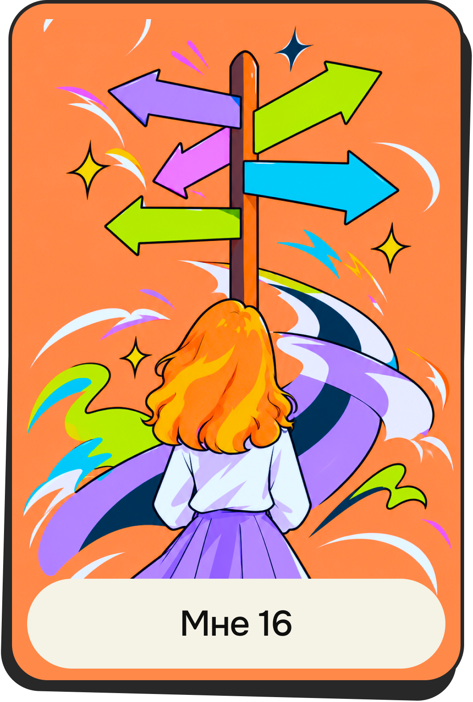

Выбор предметов
«Это был последний учебный год в школе. Преподаватели попросили нас написать, какие предметы мы будем сдавать на ЕГЭ. Для меня это был сложный выбор, ведь от этого зависело, куда я смогу подать документы. Смотря на физику и математику в списке, я вспоминала как в детстве интересовалась астрономией и мечтала связать с этим жизнь».